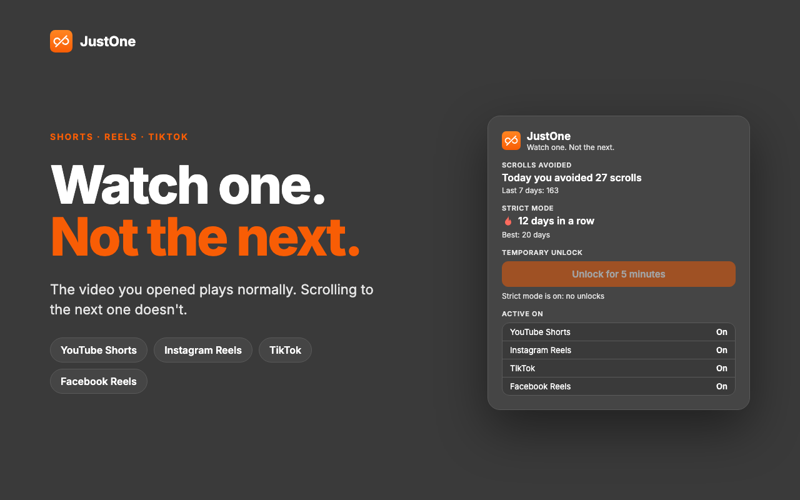
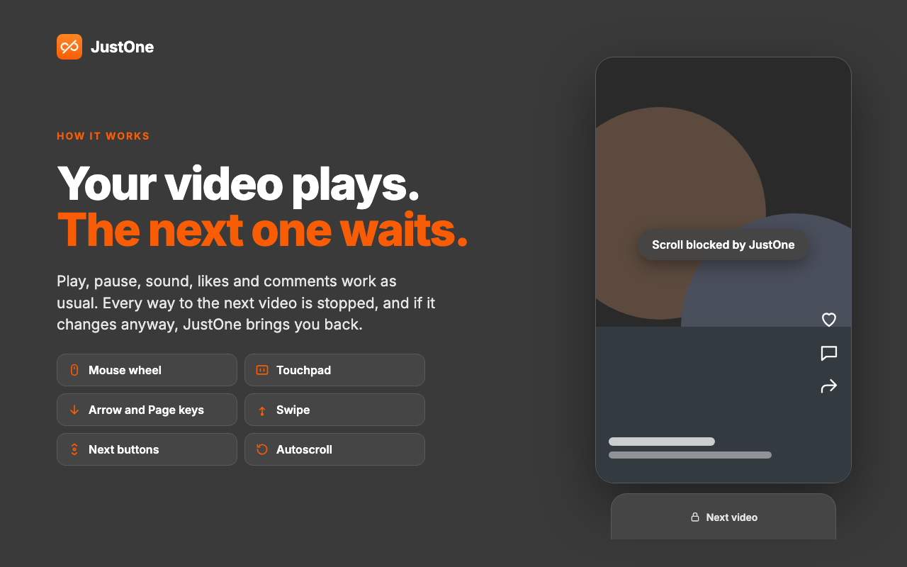
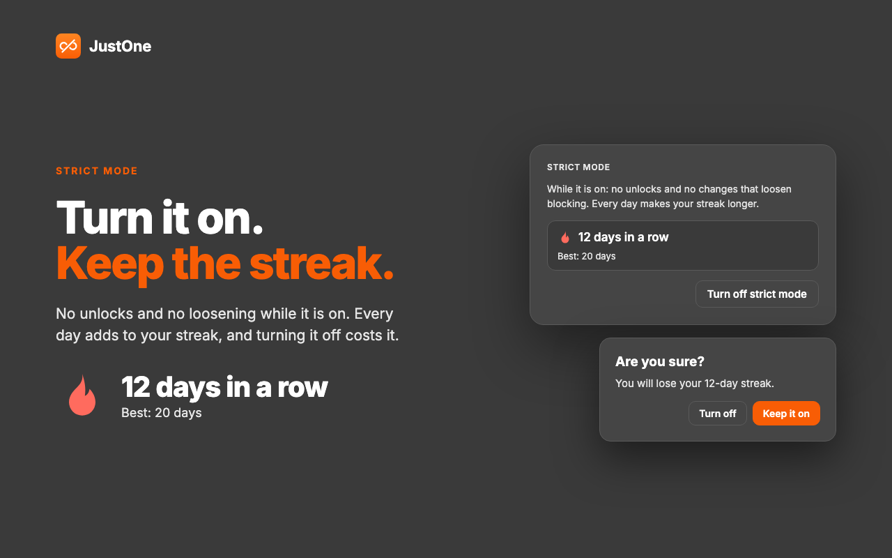
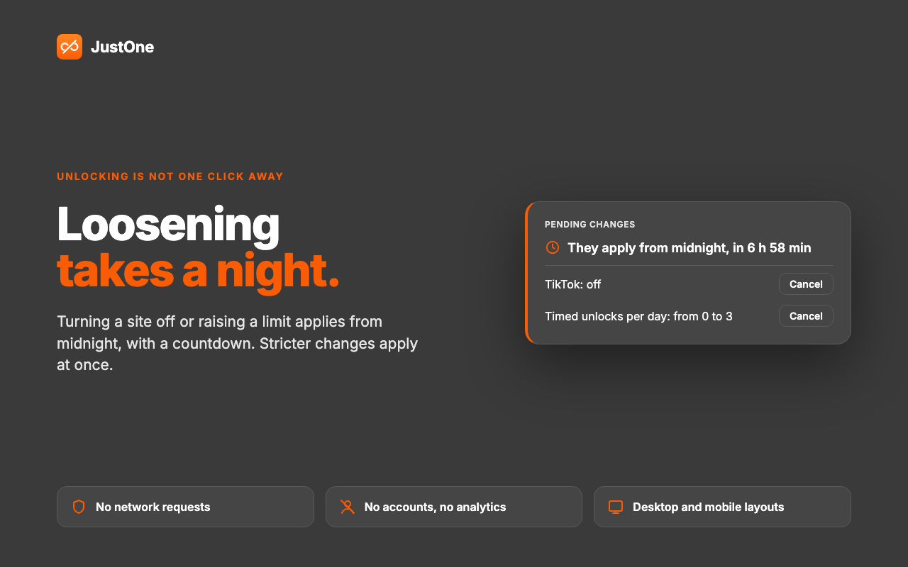

Chrome extension
Watch one.
Not the next.
Open a YouTube Short, an Instagram Reel, a TikTok or a Facebook Reel: it plays normally. Scrolling to the next one does nothing.

What it does
-
Blocks the next video
Mouse wheel, touchpad, arrow and Page keys, swipe, the next buttons and autoscroll. If the video changes anyway, JustOne brings you back.
-
Leaves the rest alone
Play, pause, sound, likes and comments work as usual. Home feeds, profiles, search and messages are not touched.
-
Your way of saying stop
A quiet block with a short notice, going back to where you came from, or a pop-up with a message you write.
-
Unlocking is not one click away
Unlock by minutes or by videos, with a daily limit (none by default). Loosening a setting applies from midnight.
-
Strict mode and streak
No unlocks and no loosening while it is on. Every day adds to your streak; turning it off costs it.
-
Private by design
No servers, accounts or analytics, and no network requests. Privacy policy.



Works in Google Chrome on YouTube Shorts, Instagram Reels, TikTok (For You, Following, LIVE) and Facebook Reels, including their mobile layouts. English and Italian. Questions? See Support.
Estensione per Chrome
Guardane uno. Non il prossimo.
Apri uno Short di YouTube, un Reel di Instagram, un TikTok o un Reel di Facebook: si guarda normalmente. Scorrere al video successivo non fa niente.
- Blocca il prossimo video: rotella, touchpad, frecce e tasti Pag, swipe, pulsanti avanti e scorrimento automatico. Se il video cambia comunque, JustOne ti riporta indietro.
- Lascia stare il resto: play, pausa, audio, like e commenti funzionano come sempre; home, profili, ricerca e messaggi restano liberi.
- Tre modi di reagire: un blocco discreto con un breve avviso, il ritorno alla pagina da cui eri entrato, o un pop-up con un messaggio scritto da te.
- Sbloccare non costa un clic: sblocchi a minuti o a video con un limite giornaliero (nessuno di base); allentare un'impostazione vale dalla mezzanotte.
- Modalità rigorosa e serie: niente sblocchi e niente modifiche che allentano finché è accesa; ogni giorno allunga la serie, spegnerla te la fa perdere.
- Privacy prima di tutto: niente server, account, statistiche d'uso né richieste di rete. Informativa sulla privacy.
Domande? Vedi Supporto.